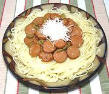

|
Frankfurter Olive Sauce for PastaItaly - Spaghetti con Würstel e Olive | ||||
| For 12 oz Effort: Sched: DoAhead: |
Pasta ** 45 min Yes |
Here's one the kids will love - so long as you call it "Hot Dogs and Spaghetti". It's actually an interesting and tasty dish for adults too. Spaghetti is standard, but I prefer linguini. | |||
|
|
8 8 2 2 2 3 1/2 1 tt 1/4 12 ----- |
oz oz oz T T T T c t oz --- |
Onion Frankfurters Green Olives (1) Butter Olive Oil ExtV Brandy Flour Stock, cold Salt (2) Pepper black Pasta -- Garnish Pecorino Cheese |
Prep - (15 min)
|